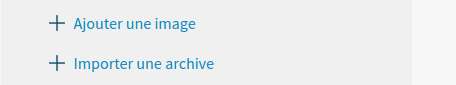
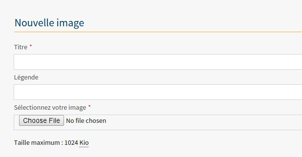
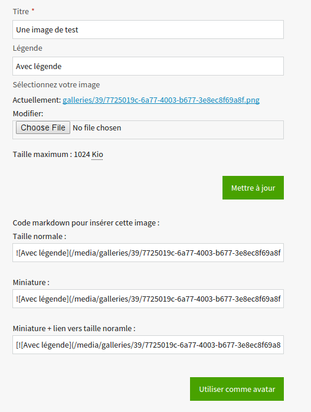
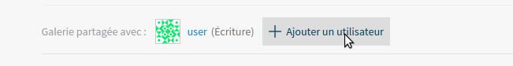
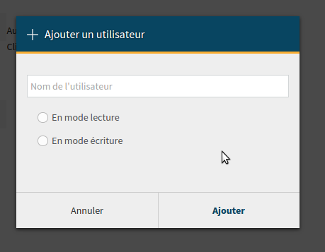
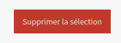
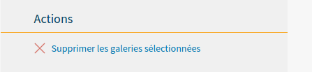
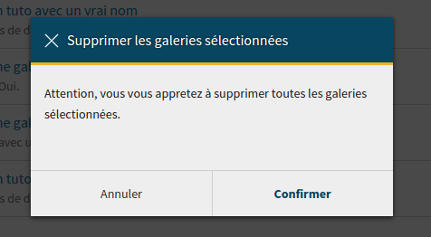

Les galeries¶
La liste des galeries de l’utilisateur est accessible via l’url suivante : /galerie/.
Généralités¶
Une galerie rassemble un certain nombre d’images. Elle doit prendre un titre et peut également posséder un sous-titre.
Création et remplissage¶
On peut créer une nouvelle galerie via l’url /galerie/nouveau/. Le titre de la galerie et un sous-titre facultatif sont demandés.
Attention
Une galerie est créée automatiquement lors de la création d’un nouveau contenu par un utilisateur. Elle possède alors le même nom que celui-ci.
Il est ensuite possible d’uploader des images via le menu de gauche :
Liens permettant d’uploader des images
Via celui-ci, on peut importer des archives contenant des images (au format ZIP) ou des images seules. Dans ce dernier cas, le formulaire d’upload est le suivant :
Formulaire d’upload de nouvelles images
Comme on peut le voir, chaque image doit posséder au minimum un titre et peut posséder une légende, qui sera employée par la suite. Il est donc conseillé de remplir également ce second champ, bien que ce ne soit pas obligatoire. Quant à l’image elle-même, sa taille ne peut pas excéder 1024 Kio.
Une fois l’image uploadée, il est possible d’y effectuer différentes actions sur la page qui lui est spécifique :
Gestion d’une image
Autrement dit,
- En modifier le titre, la légende ou encore l’image en elle-même. À noter que le titre et la légende peuvent être modifiés sans qu’il ne soit nécessaire d’uploader une nouvelle image.
- Obtenir le code à insérer dans un champ de texte acceptant le Markdown pour l’image en elle-même, sa miniature ou encore la miniature accompagnée du lien vers l’image en taille réelle.
Attention
Le titre de l’image n’entre pas en compte dans le nommage de l’image une fois cette dernière téléchargée. Afin de réduire le risque de rencontrer des conflits de noms de fichiers, ces derniers sont hashés.
Les utilisateurs et leurs droits¶
Le créateur de la galerie possède un droit d’écriture, mais peut y ajouter à tout moment des utilisateurs :
Ajout d’un nouvel utilisateur
Lors d’un clic sur “Ajouter un utilisateur”, une fenêtre modale s’ouvre :
Choix de l’utilisateur et sélection de ses droits
Il est alors possible de rajouter un nouvel utilisateur dans la galerie. Les droits de celui-ci peuvent être les suivants :
- Lecture : (
zds.gallery.models.GALLERY_READ) l’utilisateur a seulement le droit de consulter les images existantes dans la galerie sans pouvoir apporter de modifications ; - Écriture : (
zds.gallery.models.GALLERY_WRITE), inclut Lecture, l’utilisateur peut modifier ou supprimer des images existantes, en rajouter des nouvelles et changer les attributs de la galerie (y compris y ajouter de nouveaux utilisateurs);
Il n’est actuellement pas possible de modifier les droits d’un utilisateur après son ajout à la galerie.
La suppression¶
Une image peut être supprimée à tout moment en la sélectionnant sur la page de la galerie et en cliquant sur le bouton suivant :
Suppression d’une ou plusieurs image(s)
Attention : aucune confirmation n’est demandée lors de la suppression d’une image.
Une galerie peut quant à elle être supprimée via la page de gestion des galeries (/galerie/) en cochant la case de celle-ci et en cliquant sur “Supprimer les galeries sélectionnées” dans le menu de gauche :
Suppression d’une galerie
Une modale s’ouvre ensuite, demandant de confirmer le choix :
Confirmation
Une fois cliqué sur “Confirmer”, la galerie et les images qu’elle contient sont supprimées.
Attention
Si une galerie est liée à un tutoriel existant, elle ne peut pas être supprimée.
Lien galerie <-> Tutoriel¶
Chaque tutoriel possède une galerie en propre. Par défaut cette galerie possède le même nom qui a été donné au tutoriel lors de sa création.
Chaque auteur possède un droit d’accès en écriture (GALLERY_WRITE) sur la galerie liée au tutoriel.
Si un membre possède un droit de lecture seule (GALLERY_READ) sur la galerie d’un tutoriel, aucun droit n’est accordé à ce membre quant au tutoriel.
Aspects techniques¶
Chaque galerie (classe Gallery) est stockée en base de données avec son titre, son sous-titre et son slug (ainsi que la date de création et de dernière modification). Une galerie est associée à l’utilisateur via la classe UserGallery, qui reprend un lien vers l’utilisateur, la galerie, mais également les droits qu’il possède sur cette dernière, sous la forme d’une constante : GALLERY_READ pour le droit de lecture ou GALLERY_WRITE pour le droit d’écriture.
Une image (classe Image) est renseignée en base de données avec son titre, sa légende, un lien vers la galerie qui la contient, son slug et un lien physique vers le fichier image (ainsi que la date de création et de dernière modification).
Les images sont stockées dans le dossier renseigné par la variable MEDIA_URL (dans le fichier settings.py), dans un sous-dossier dont le nom correspond au pk de la galerie. C’est la librairie easy_thumbnails qui gère la génération des miniatures correspondantes aux images uploadées, à la demande du back.
Outils logiciels utilisés¶
Afin d’assurer une compatibilité maximale de toutes les images des galeries et leur redimensionnement au besoin, le logiciel Pillow est utilisé.